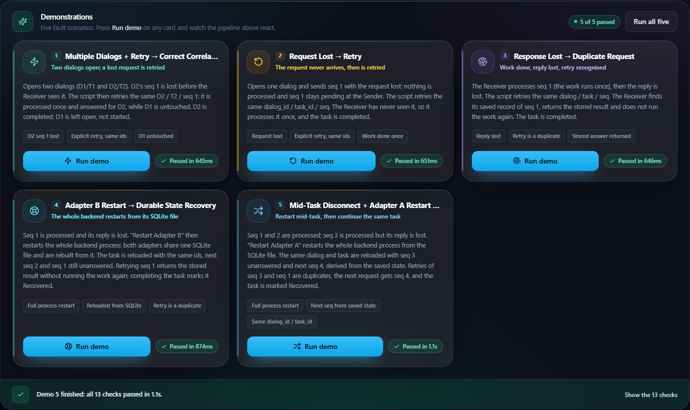

PS-021: Experimental Dialog Correlation and Recovery Across Agent Adapters
Submission report — a complete, tested hackathon prototype
Experimental prototype. Two mock agent adapters and an experimental dialog-state schema
(v0.1-experimental). It is not a production system, not an
implementation of a final IETF standard, not an MCP or A2A implementation (no MCP/A2A
interoperability is claimed), and does not provide exactly-once delivery: duplicate side
effects are prevented only once the original request has been durably recorded as processed.
Team
Nighthawks — member names, roles and GitHub handles: see §13 (to be completed by the team)
Provisional — the organizers' Proposed-structure-hackathon.pdf was not available
when this report was generated; sections will be re-ordered to that structure once it is provided.
Contents
Problem statement
Objectives & requirements
Architecture
Dialog-state schema
Lifecycle state machine
Disconnect / retry scenarios
Implementation
Testing & results
Demonstration & pseudocode
Limitations & non-claims
Future work
Deliverables
Team
References
1. Problem statement
PS-021: Experimental Dialog Correlation and Recovery Across Agent Adapters. Build a prototype that
correlates tasks across two mock agent adapters using dialog IDs, explicit lifecycle states, request deduplication, and
durable recovery after a restart.
AI agents increasingly hand tasks to one another across different frameworks, and each framework tracks "which
conversation is this?" in its own way. When something goes wrong mid-task — a lost request, a lost reply, an agent
restart — there is often no shared, explicit record of which task a message belongs to or whether it was already handled:
the sender does not know whether the receiver got the request;
a restarted agent that kept its dialog state only in memory has forgotten the task;
the natural reaction is to retry — and a retry of a request whose reply was lost repeats work that was
already done (sending a message twice, creating two records, charging twice).
The prototype shows how explicit identifiers (dialog_id, task_id, seq),
explicit lifecycle states, deduplication on (dialog_id, seq) and durable state in a SQLite file let a task
survive a disconnect or a restart without losing its identity or repeating a side effect that was already recorded.
Three rules behind the design
Name everything explicitly. A dialog and a task get IDs; each logical request gets a sequence number.
Write it down before relying on it. Every state change is persisted to the SQLite file immediately.
Check before acting. Before doing any work, the receiver looks up whether this (dialog_id, seq) was already processed.
dialog_id/task_id in the file; recover(); task_id checked on every request
Scenarios 4 and 5; recovery.test.ts; E2E Dc and E
R4
Request deduplication
Primary key (dialog_id, seq) in requests; stored result returned on a repeat
Scenario 3; adapters.test.ts; E2E Da
R5
Five disconnect/retry scenarios
Scripted scenarios, runnable from tests, HTTP and the dashboard
§6, §8
R6
Explicit lifecycle states and valid transitions
5 states, transition table enforced by DialogManager
DialogManager.test.ts, lifecycle.test.ts
R7
Mentor-pinned draft or clearly labelled experimental schema
Clearly labelled v0.1-experimental; no mentor draft pinned (pending mentor clarification)
docs/EXPERIMENTAL_SCHEMA.md
R8
No overclaiming (IETF, MCP/A2A, exactly-once)
Non-claims stated in the README, schema, dashboard footer and this report
§10
Expected outcomes (from the Problem Statement) and where they are delivered: two working mock adapters (§7),
schema and state machine (§4, §5), durable state/recovery (§7, §8), deduplication (§7, §8), five scenarios (§6),
recovery test results (§8 — interoperability between independently built adapters is not claimed, see §10),
and a demonstration of task-identity preservation and duplicate-side-effect rejection (§9).
3. Architecture
Both mock adapters run as modules in one Node.js process and share one SQLite file
(sql.js, written to disk after every mutation). The transport between them is an in-process function call with fault
injection (drop the next request, or drop the next reply). An Express API exposes a SimulationRuntime that
builds and drives both adapters; the React dashboard reads everything from that API and holds no experiment state of its own.
Figure 1 — Architecture. Every component name is verified against the source by e2e/report/diagrams.mjs.
Component
Source
Responsibility
Adapter A
backend/src/adapters/AdapterA.ts
Creates dialogs, assigns seq from its durable send log, writes each request PENDING before sending, retries with the stored payload, recover(), completes or fails dialogs.
Adapter B
backend/src/adapters/AdapterB.ts
handleRequest: correlate → dedup → terminal check → run the mock side effect → record → transition.
One lock, event log, scenario runner; "restart A/B" = close the database handle and rebuild everything from the file.
HTTP API
backend/src/app.ts, backend/src/http/
REST endpoints for dialogs, requests, retries, completion, restarts, scenarios, events, reset (see §7).
Dashboard
Front/frontend/
React 18 + Vite; polls the API (useBackendEngine); manual controls make exactly one API call per click.
4. Dialog-state schema (experimental, v0.1)
Experimental dialog-state schema v0.1-experimental — inspired by emerging IETF agentproto
discussions; NOT a standard; NOT MCP; NOT A2A. No mentor-selected draft has been pinned (pending mentor clarification).
Full definition: docs/EXPERIMENTAL_SCHEMA.md. The code is the source of truth.
Identifiers
Identifier
Meaning
Generated by
Kept on retry
dialog_id
One bounded A↔B exchange about one task; the correlation key
Adapter A: dlg-<Date.now()>-<7 random base-36 chars>
Yes
task_id
The unit of work; must survive restarts
The caller of startDialog(taskId); checked by Adapter B on every request
Yes
seq
One logical request within the dialog
Adapter A: MAX(seq) in its send log + 1
Yes
Durable records (one SQLite file)
Table
Key
Columns
Role
dialogs
dialog_id
task_id, state (5 states), restored
Identity and lifecycle state
requests
(dialog_id, seq)
processed_at, result (JSON)
Adapter B's processed records — the deduplication source of truth
outbound_requests
(dialog_id, seq)
payload, status (PENDING/ACKED), attempts
Adapter A's send log: replay payloads, next seq, unanswered seqs
Correlation: a request belongs to the dialog named by dialog_id, and its task_id must equal the stored one (else TASK_MISMATCH).
Deduplication: if (dialog_id, seq) exists in requests, the stored result is returned as duplicate and the side effect is not run — also for finished dialogs.
Recovery: after a restart, every INITIATED/PROCESSING dialog is marked restored; its next seq is MAX(seq)+1 and its unanswered seqs are the PENDING rows, both read from the file.
5. Lifecycle state machine
Exactly five states (LIFECYCLE_STATES in backend/src/types/index.ts), enforced by
DialogManager; any other transition throws InvalidTransitionError. The diagram below is generated
from — and checked against — the code's VALID_TRANSITIONS table.
A request still PENDING after maxAttempts (default 5), or failDialog(id, reason)
PROCESSING
COMMITTED
completeDialog, dialog never restored, nothing PENDING
PROCESSING
RECOVERED
completeDialog, dialog restored after a restart, nothing PENDING
A finished dialog accepts no new work (DIALOG_TERMINAL); a retry of an already-processed seq is still answered
with the stored result (idempotent replay).
6. Disconnect / retry scenarios
The five scenarios are backend scripts (backend/src/scenarios/scenario1..5.ts) using the real adapters,
transport, DialogManager, repositories and a real SQLite file. Each is also an adapter-level test, a live-runtime test, an
HTTP call sequence, a run endpoint (POST /api/scenarios/:id/run) and a dashboard card.
#
Scenario
What fails
Recovery action
Expected (and observed) result
1
Multiple Dialogs + Retry → Correct Correlation
D1/T1 and D2/T2 open; D2's seq 1 request is lost
Retry D2 / T2 / seq 1
Processed once, answered for D2; D1 untouched. D2 COMMITTED, D1 left INITIATED by design
2
Request Lost → Retry
seq 1 lost before B
Retry seq 1 (same ids)
Processed once (B never saw it). COMMITTED
3
Response Lost → Duplicate Request
B processes seq 1, reply lost
Retry seq 1
duplicate, stored result, work not repeated. COMMITTED
4
Adapter B Restart → Durable State Recovery
B processes seq 1, reply lost, then restart
Rebuild from the file; recover() (next seq 2, pending [1]); retry seq 1
duplicate; restarted process runs no side effect. RECOVERED
3 and 1 duplicate; seq 4 once; same dialog_id/task_id. RECOVERED
Scenario 5 also has a request-lost variant (seq 3 never reaches B; the retry is processed once). In every scenario the
next seq comes from durable state; no test passes it in.
Both adapters share one database handle, so "Restart Adapter A" and "Restart Adapter B" do the same thing: close the
handle, discard every in-memory object, reopen the SQLite file, rebuild both adapters and run recover(). A real
operating-system process restart (kill the server, start it on the same file) runs the same recover() at boot — the
browser E2E suite tests that too.
Repository
backend/ Express API, adapters, runtime, scenarios, SQLite (sql.js); 14 Vitest files
Front/frontend/ React dashboard (Vite, Tailwind); plain-Node unit tests
e2e/ Playwright suite (Edge), demo recorder, report/deck/diagram builders
scripts/ demo launcher (demo.mjs), live trace (trace.mjs), trace tests
docs/ schema, API design, pseudocode, test results, demo script, submission
8. Testing & results
All numbers are from runs executed on 2026-10-09 (Windows 11, Node.js v24.14.1, Microsoft Edge 154); details in
docs/TEST_RESULTS.md.
Level
What runs
Count
Result
Backend unit + integration (Vitest)
adapters, DialogManager, storage, lifecycle, recovery, transport, events, runtime, the five scenarios
14 files, 265 tests
265 passed
— of which HTTP API (supertest)
every endpoint, validation, error mapping, scenario runs, HTTP scenario sequences
62 tests
62 passed
Frontend unit (plain Node + jsdom)
mappers vs captured backend responses, user texts, polling hook, manual controls, whole App vs a scripted fake fetch
65 checks
65 passed
Trace formatter
every backend event type mapped; real captured events
6 checks
6 passed
Client smoke (real backend)
dashboard API client against a running backend
6 steps
6 passed
Browser E2E (Playwright + Edge)
real browser → Vite → backend process → SQLite file; five scenarios, manual flows, real process kill/restart, reset
16 tests
16 passed — 3 consecutive runs (Phase 9) and the final run (Phase 11)
Scenario × level matrix
Scenario
Adapter level
Live runtime
HTTP call sequence
Run endpoint
Browser E2E
1 Multiple Dialogs + Retry
✔
✔
✔
✔
✔
2 Request Lost → Retry
✔
✔
✔
✔
✔ (+ manual flow)
3 Response Lost → Duplicate
✔
✔
✔
✔
✔ (+ manual flow)
4 Adapter B Restart → Recovery
✔
✔
✔
✔
✔ (+ real process restart)
5 Mid-Task Disconnect + Restart → Resume
✔ (both variants)
✔ (both)
✔ (both)
✔ (both)
✔ (default variant)
Do the tests catch real breakage? (mutation check)
Fault injected temporarily
Browser E2E result
Duplicate result line reworded (frontend)
3 of 16 tests failed
Deduplication check disabled in AdapterB.handleRequest (backend)
10 of 16 tests failed
No reconnect after a network failure (frontend hook)
1 of 16 tests failed (the real process-restart test)
Every file was restored byte-identical afterwards. One finding: with the dedup check disabled, the backend's
insert-conflict fallback still answered duplicate — only the in-memory side_effects_since_boot
counter showed the work had run twice, so the E2E tests assert that counter.
What the results prove — and what they do not
Proven: correlation by (dialog_id, task_id), deduplication on (dialog_id, seq) once the record is durable, recovery of identity and next seq from the file after an in-process rebuild and after a real OS-process restart, the five scenarios at every level, and the dashboard showing all of it.
Not proven / not claimed: a crash between doing the work and recording it (the crash window, §10); crash during a file write; concurrency or load; other browsers; interoperability between independently implemented adapters — both adapters are ours, in one codebase, against one schema. "Recovery test results" are recorded; what the mentors expect under "interoperability" is pending clarification.
9. Demonstration & pseudocode
The live demo (7–8 minutes, docs/DEMO_SCRIPT.md) starts with node scripts/demo.mjs (backend on a
fresh demo database + dashboard) and a live text trace (node scripts/trace.mjs). Talk track: start a task → normal
request → request lost → retry → reply lost → retry recognised as duplicate → Scenario 1 (correlation) → reply lost →
Restart Adapter A → reloaded with the same ids, next seq and the unanswered seq → retry (duplicate) → continue → RECOVERED
→ optional real process kill → "Run all five". A backup video and the screenshots below are generated reproducibly.
Reply lost, then the retry: "duplicate blocked · work NOT repeated · stored answer returned".After "Restart Adapter A": same dialog_id / task_id, next_seq 5, seq 4 still unanswered.The task finishes RECOVERED — "5 work items, none repeated".

All five scenarios run from the dashboard: "5 of 5 passed".
Pseudocode (from the real code paths — full version: docs/PSEUDOCODE.md)
sendRequest(dialog_id, payload): # AdapterA.ts
if dialog is terminal: throw DIALOG_TERMINAL
seq = send_log.max_seq(dialog_id) + 1 # next seq from durable state
send_log.insert(seq, payload, PENDING) # persisted BEFORE sending
deliver(dialog_id, task_id, seq, payload) # ok / duplicate → ACKED
retryRequest(dialog_id, seq): # same ids, same stored payload
deliver(dialog_id, task_id, seq, send_log.get(seq).payload)
handleRequest(req): # AdapterB.ts — order matters
dialog = correlate(req.dialog_id, req.task_id) # DIALOG_NOT_FOUND / TASK_MISMATCH
if processed.has(req.dialog_id, req.seq):
return duplicate(stored result) # work NOT re-run
if dialog is terminal: return error(DIALOG_TERMINAL)
result = run_side_effect(req.payload) # ── crash window opens
processed.insert(req.dialog_id, req.seq, result) # persisted ── crash window closes
if dialog.state == INITIATED: transition(PROCESSING)
return ok(result)
restart(A or B): # SimulationRuntime.doRestart
close the handle; rebuild both adapters from the SQLite file; recover()
recover(): # AdapterA.ts — also at server start
for each INITIATED / PROCESSING dialog:
restored = true
next_seq = send_log.max_seq + 1 ; pending_seqs = send_log.pending
completeDialog(dialog_id):
if any seq PENDING: throw PENDING_REQUESTS
transition(RECOVERED if restored else COMMITTED)
10. Limitations & non-claims
This is not exactly-once delivery. A repeat of a request that was recorded as processed is never executed again; that is all.
Not an IETF standard implementation. The schema is experimental and only inspired by the IETF agentproto discussions.
Not MCP, not A2A, and no interoperability with them is claimed or tested.
No interoperability between independently implemented adapters is claimed (pending mentor clarification of what is expected).
Limitation
Consequence
Crash window: Adapter B runs the side effect before persisting its processed record
A crash between the two means a retry runs the work again
Single process, one shared SQLite file
"Restart A" and "Restart B" are the same full rebuild; no independent adapter failure
Non-atomic persistence (the file is rewritten in place)
A crash during the write could corrupt the database (not tested)
In-process transport with two faults (drop request / drop reply)
No real network, timeouts, reordering or concurrent delivery
In-memory counters and event log
side_effects_since_boot resets on every restart; duplicate counts and the event log are lost when the process exits
Fixed roles; one lock; local unauthenticated API
A always sends, B always receives; mutations are serialised (409 RUNTIME_BUSY); no security properties
Retry budget counts error replies too
A request can reach the 5-attempt limit with fewer dropped messages
11. Future work
Align the schema with a mentor-pinned or evolving IETF draft.
Close the crash window: intent records written before the side effect, or idempotent side effects.
Atomic file writes (write to a temporary file, then rename).
Separate processes and stores per adapter, a real network transport, and independently implemented adapters to test interoperability.
Concurrency handling for simultaneous duplicate requests; retention/cleanup of old records.
Authentication, authorization and signed requests.
12. Deliverables
Deliverable
Where
Working prototype (backend, API, dashboard)
backend/, Front/frontend/; run with node scripts/demo.mjs
Experimental dialog-state schema
docs/EXPERIMENTAL_SCHEMA.md
Pseudocode snippet for the demo
docs/PSEUDOCODE.md (and §9)
Test results (all levels)
docs/TEST_RESULTS.md
Demo script, Q&A, fallback plan
docs/DEMO_SCRIPT.md
This report and the slide deck (PDF)
docs/submission/
Demo video
Regenerated with cd e2e && npm run demo:record (not committed)
Team Nighthawks — AIORI-3, Category 6G & Future Networks.
Name
Role
GitHub
<member 1>
<role>
<handle>
<member 2>
<role>
<handle>
<member 3>
<role>
<handle>
Team member names, roles and handles have not been provided yet; they are to be completed by the team
(README §40) before submission. Licence: to be decided by the team (README §41).
14. References
IETF Agent Communication Protocols (agentproto) working group — https://datatracker.ietf.org/group/agentproto/about/ (referenced by PS-021; this project does not implement it).
PS-021 Problem Statement, AIORI-3 hackathon (organizer material), and Proposed-structure-hackathon.pdf (not available when this report was generated).